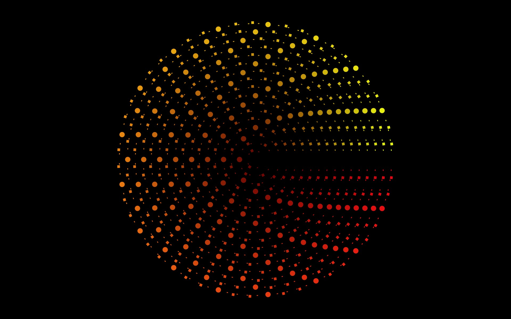

Project Euler is a website that hosts programming/math challenge that get progressively harder as you move from problem to problem. The most common way of solving these problems is to pick your favorite language, solve the problem, and then move on to the next problem; quickly trying to get to those wonderful virtual trophies.
But looking at the first problem:
If we list all the natural numbers below 10 that are multiples of 3 or 5, we get 3, 5, 6 and 9. The sum of these multiples is 23.
Find the sum of all the multiples of 3 or 5 below 1000.
If you solved this with your favorite language of choice, what have you really learned? And what exactly is the big rush to move on to the next problem anyways?
The Alternative
Alternatively, you could find other ways to solve the problem; while it still helps to solve the problem in a traditional way first (or not); don't stop after your initial solving attempt.
Not only does solving the problem in this way give you a much deeper understanding of the problem, It also pushes you to learn new technologies and a somewhat practical uses for applying these new technologies.
Here are the problems I've gone through so far. My goal is to make it through at least the first 100 problems on project euler.
The first thing I did was wrote a simple parser in PEG.js to solve this type of problem. I then took that parser and used d3 to make a gui to solve the problem.
Then I went in a different direction and used processing to create an artistic visualization of the problem.
In this problem, after solving it normally, I decided to create a visualization of the numbers using boxes. Since I've been taking a class on the Hype framework, I decided to use the feature that maps objects to shapes. Although the Hype framework didn't work out well for this project and I ended up just using plain processing, I did end up reaching my end goal which can be found here. The source to create the images can be found here.